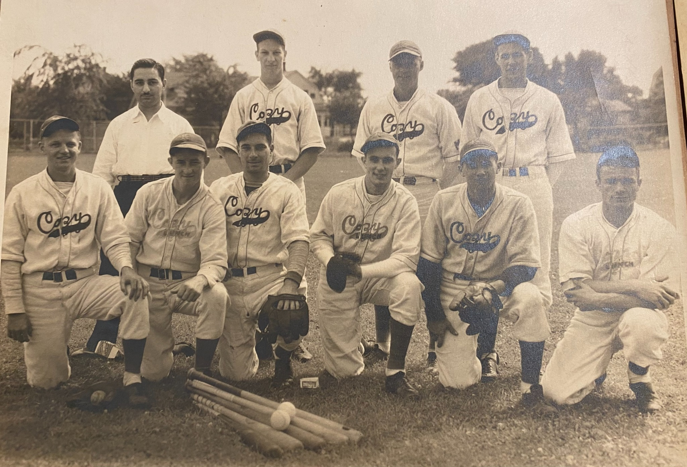
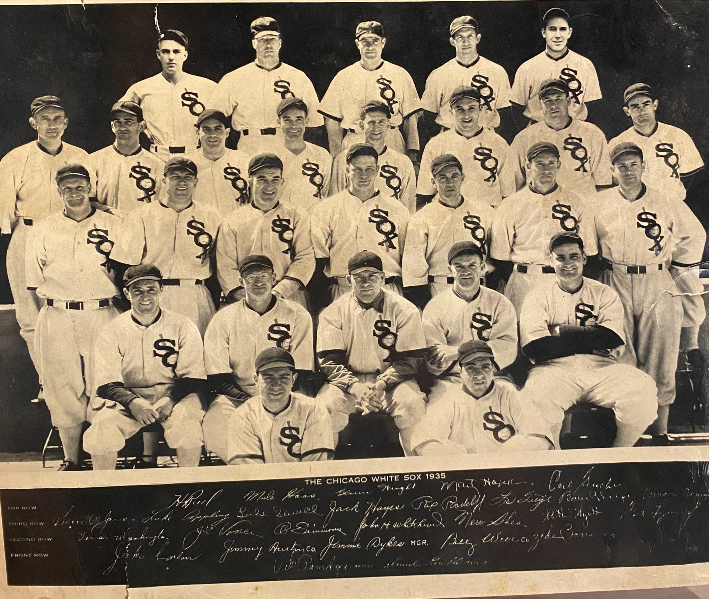
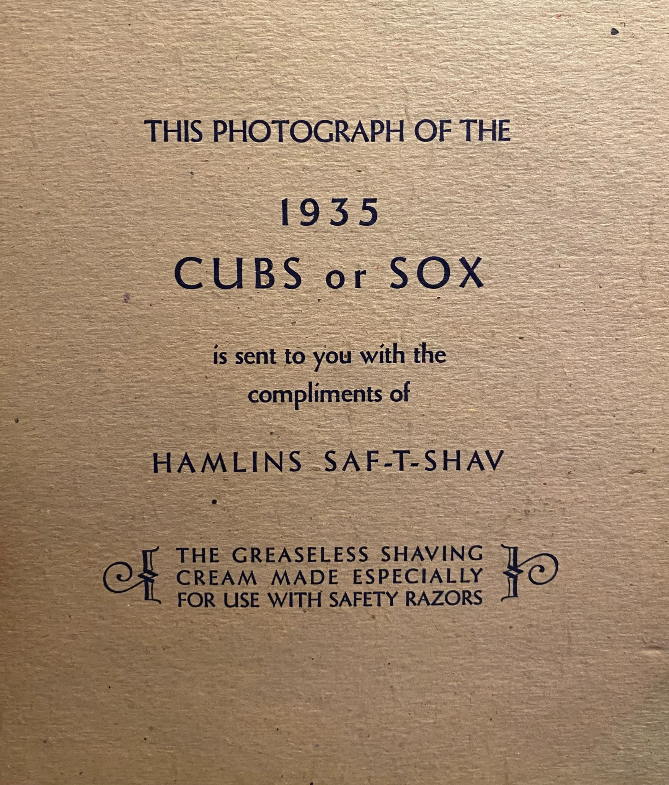
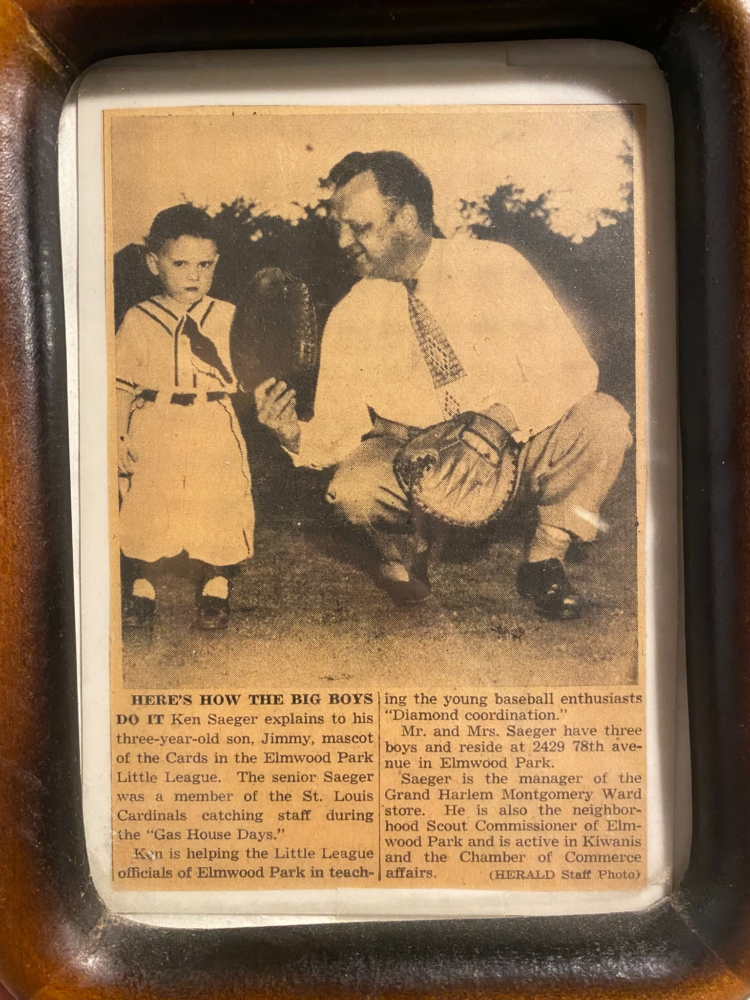

This project uses Python to track and calculate baseball player statistics, blending technology and sports analytics.
This project is inspired by my grandfather, who was part of the St. Louis Cardinals' catching staff during the Gas House Gang era.
   